LineBot第三堂課
2/23 2022
類別：程式教學
圖文選單的建立
我們再次回到Line官方帳號管理平台設定LineBot，連結如下:
https://tw.linebiz.com/login
登入帳號後，從帳號一覽選擇第一節建立之LineBot進行設定
我們這節課要建立LineBot的圖文選單，供使用者能快速選擇想使用的功能或觀看資訊 如下圖所示，若有圖文選單，使用者可直接於選單中快速選取其所需服務。
我們可在主頁下的左邊欄位內，找到聊天相關中的圖文選單
選擇圖文選單進入後，點擊右上角的「建立」即可以設定一組屬於自己的的圖文選單
圖文選單的詳細建立步驟如下:
1.進入圖文選單設定後，我們需給它一個標題，此標題也是方便未來管理，使用者不會看到。
2.接著我們要設定此圖文選單的使用期間，可先設定為一週，未來都可再更動。
3.選單列顯示文字是使用者會看到的選單名稱，可先使用預設的選單，也可選擇自訂文字，讓使用者容易理解選單的目的。
4.預設顯示方式為顯示，如此使用者一進到LineBot就能看到圖文選單。
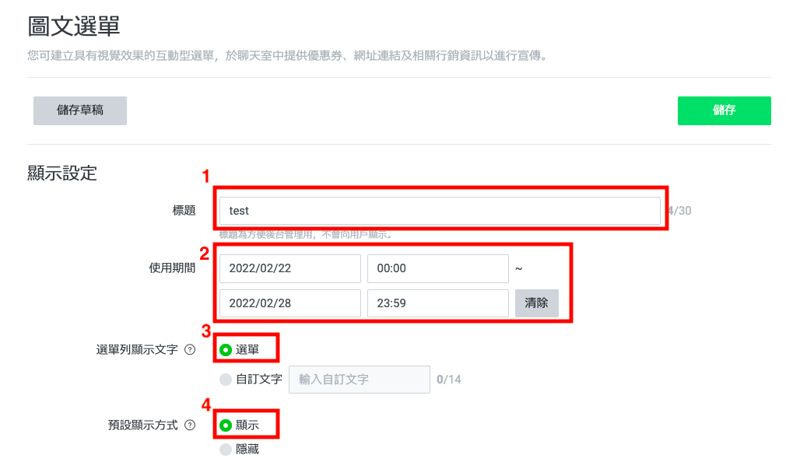5.圖文選單有不同的版型，可至內容設定下，點擊選擇版型進行選擇。
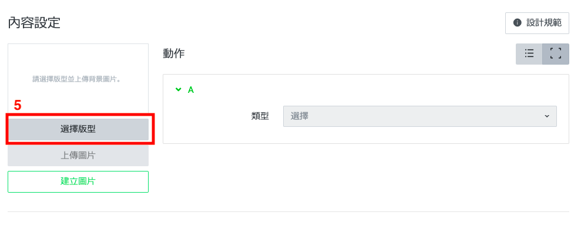6.此節課我們先選擇簡單的三欄版型，如下圖所示。
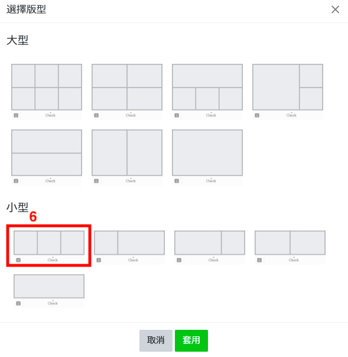7.設定好版形後，右側即會出現對應數量的動作要進行設定，因我們上一步是選擇三欄的版形，因此有A、B、C三個動作需設定，我們以A的動作示範教學。先點擊A右側類型旁的選擇。
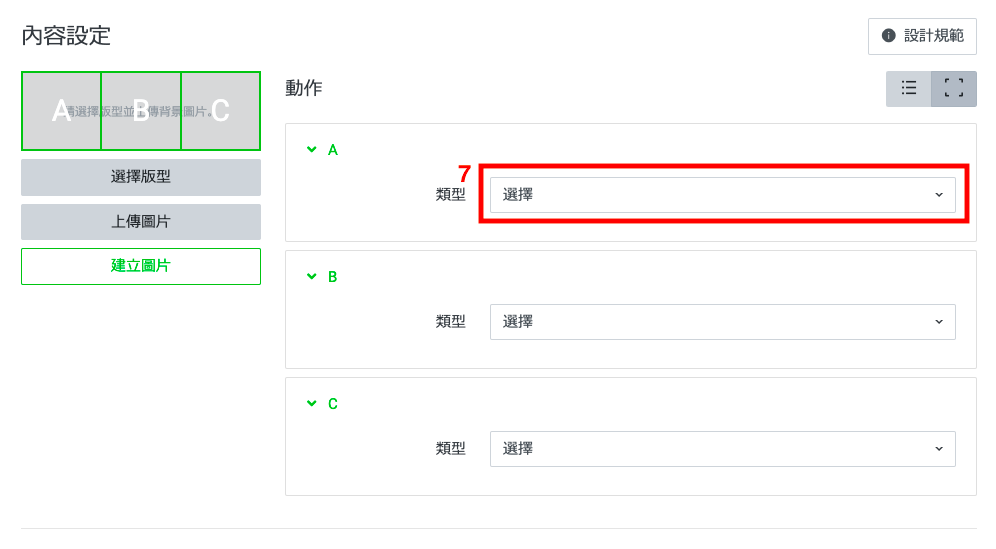8.選單類型有連結、優惠券、文字、集點卡及不設定的選擇，我們選擇最常用的連結。
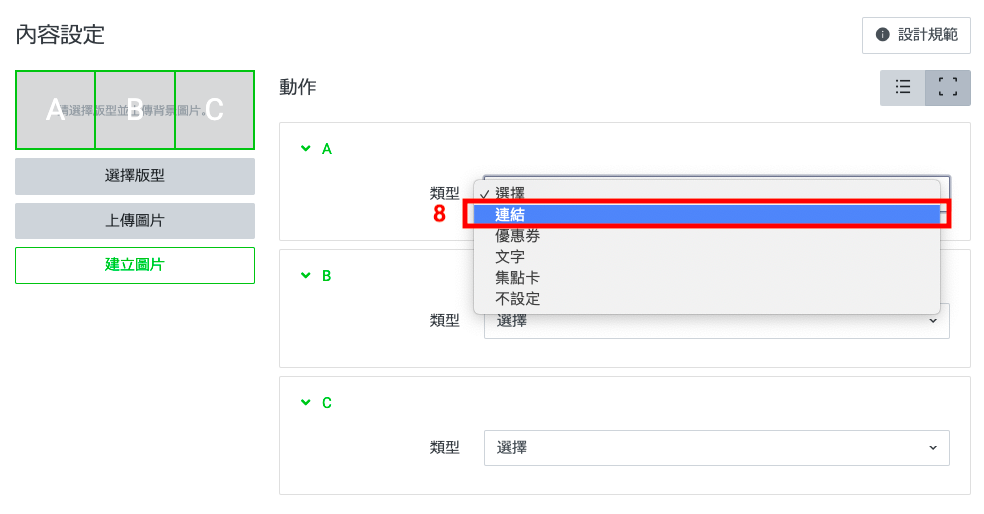9.於連結下方欄，填入欲連結的網頁，此練習我們以"https://www.google.com.tw/"為例
10.並於動作標籤欄填入此連結的簡單說明，如網站名稱「google」。
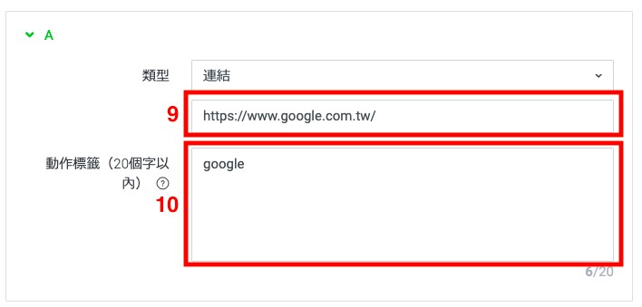11.B和C的動作也如步驟8~10操作。
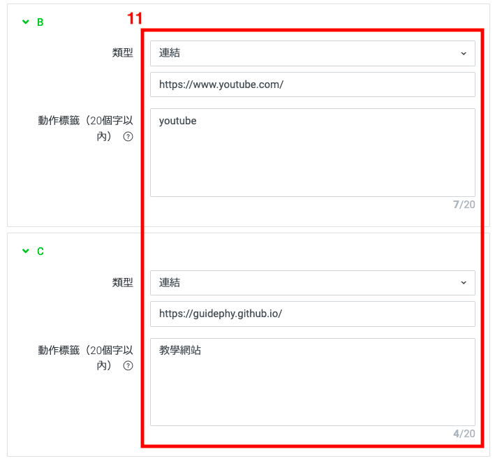12.完成上述設定後，會發現無法儲存，因左側內容設定下的版型需有圖片作為背景。
我們選擇建立圖片進行個別動作的圖樣設定
13.先點擊最左邊欄位(動作A)進行圖樣設定，之後可依序點擊中間欄及右邊欄進行個別設定。
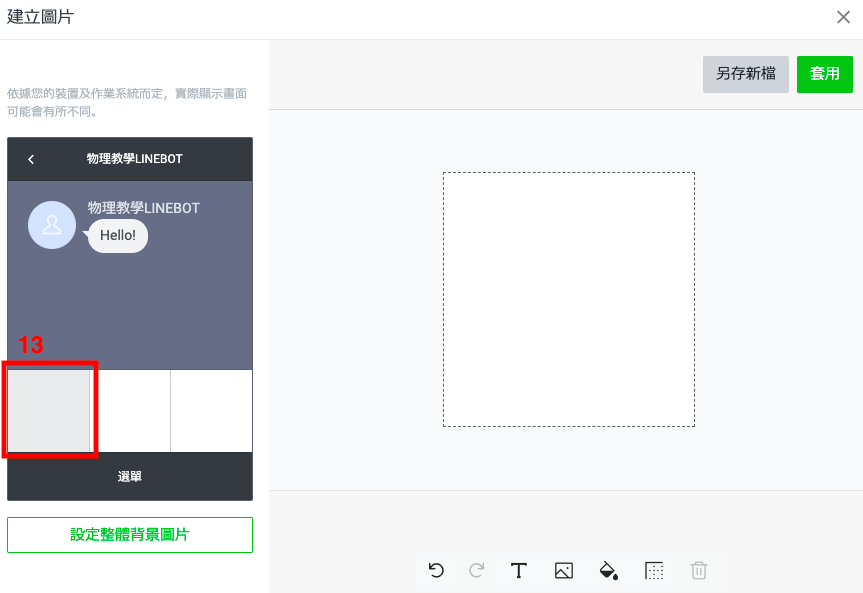14.虛線內的白色區域即為欄位的空白畫布，我們要利用已有的圖片或文字進行排版以美化圖文選單。若電腦沒有可運用的背景圖片，我們可以先選擇以輸入文字的方式完成圖樣的設定。
15.輸入選單欲顯示的文字，如「google」。
16.可透過對齊選項，讓文字在選單中的適當位置。
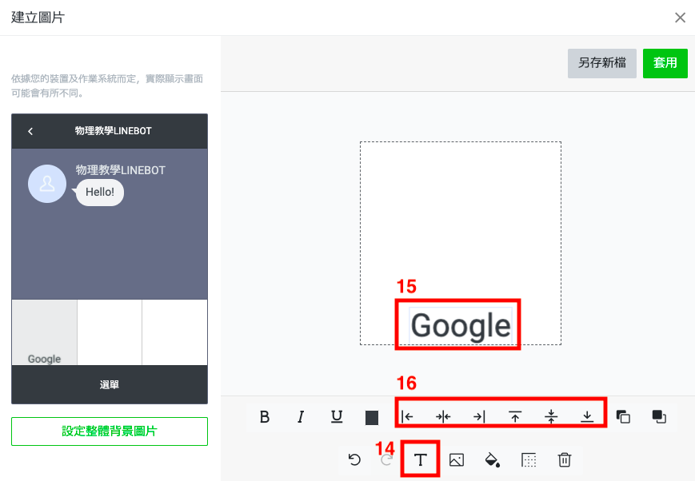17.中間欄(動作B)及右邊欄(動作C)如步驟14~16進行操作。
18.三個欄位的圖樣皆設定好後，即可按右上角的套用完成設定。
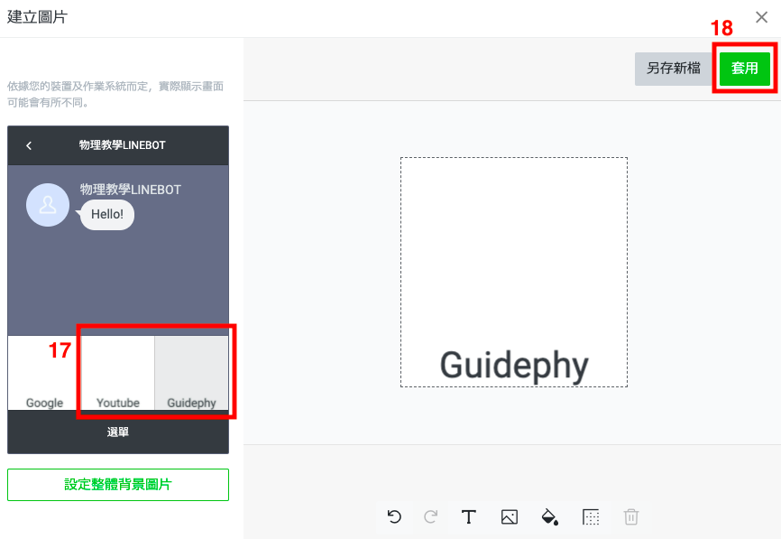19.完成步驟1~18後，則已完成圖文選單設定，再次確認沒問題後，即可按儲存，完成圖文選單。
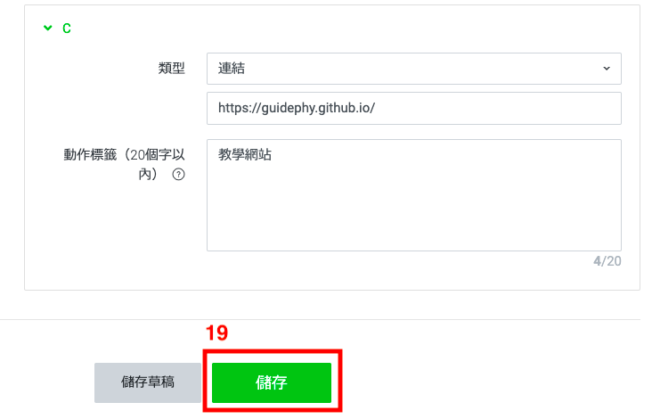此時，用手機的Line進到此LineBot的聊天室，將會在最下方看到剛設定的圖文選單，可點擊各欄位，檢查是否如設定時動作。
課程作業1-利用LineBot製作你的備審資料聊天機器人
需具備功能:
1.LineBot的Logo放置個人的照片。(10%)
2.加入時的歡迎訊息。(25%)
3.有簡單的自動回應功能。(25%)
4.有圖文選單可供使用者操作。(40%)
*圖文選單需有六個欄位，可從「自我介紹」、「個人資料表」、「在校成績」、「學習歷程」、「「讀書計畫」、「多元表現」、「社會服務」、「競賽成果」、「報考動機」九項中或其它與備審資料相關項目，選六項放入欄位。
*圖文選單各項欄位需設計，不能只有如教學中的文字，必須有各自對應的圖片，美觀將列入40%中的評分。
*圖文選單的連結可先暫時連結到「google」，只以外觀進行評分。
備註:
圖文選單中各項欄位的圖樣，可至Canva製作屬於自己個人特色的圖片，Canva連結如下:
https://www.canva.com/zh_tw/
關於Canva的操作說明，除上課說明外，可參考下面papaya電腦教室製作影片。